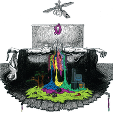
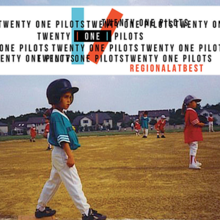
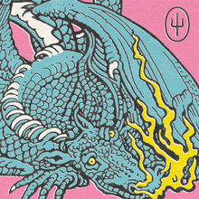

TWENTY ONE PILOTS
Grammy Award 2017!
Twenty One Pilots (estilizado como twenty one pilots ou twenty øne piløts) é um duo americano originário de Columbus, Ohio. A banda foi formada em 2009 e é composta por Tyler Joseph e Josh Dun. Eles lançaram dois álbuns independentes, Twenty One Pilots, em 2009, e Regional at Best, em 2011, antes de assinarem com a gravadora Fueled by Ramen, em 2012. Seu primeiro álbum com esta gravadora, Vessel, foi lançado em 2013. O duo alcançou um grande sucesso com seu quarto álbum, Blurryface, lançado em 2015. O quinto álbum de estúdio do duo, Trench, foi lançado em 5 de outubro de 2018.
A banda foi formada em 2009, em Columbus, Ohio, por amigos de faculdade. Eles eram: Tyler Joseph, Nick
Thomas, Chris Salih. Tyler Joseph teve a ideia do nome da banda enquanto estudava "All My Sons", uma
peça de Arthur Miller que contava a história de um homem que deve decidir o que é melhor para sua família
depois de causar a morte de 21 pilotos durante a Segunda Guerra Mundial, porque ele conscientemente os
enviou peças defeituosas para o bem de seu negócio. Josh Dun explicou que esta história de dilema moral foi
a inspiração para o nome da banda. Em 29 de dezembro de 2009, eles lançaram seu álbum de estreia,
intitulado Twenty One Pilots, e começaram um tour em Ohio.
Em 2010, a banda lançou duas faixas inéditas oficialmente em sua conta no SoundCloud. Estas faixas
incluíram um spin-off original de "Time to Say Goodbye", de Andrea Bocelli e Sarah Brightman, e um cover de
"Jar of Hearts", de Christina Perri. Eles estavam originalmente disponíveis para download gratuito, embora a
opção tenha sido removida desde então.
Chris Salih saiu da banda em 8 de maio de 2011, e Nick Thomas também saiu em aproximadamente um mês depois,
em 3 de junho de 2011. Os dois se despediram dos fãs na página oficial da banda no Facebook. Então,
Tyler Joseph se juntou a Josh Dun, ex-baterista da banda House of Heroes.]
Twenty One Pilots
(2009)

Twenty One Pilots é o primeiro álbum de estúdio auto-titulado da banda norte-americana Twenty One Pilots, lançado independentemente em 29 de dezembro de 2009. O álbum vendeu 115 mil cópias
Regional at Best
(2011)

Regional at Best é o segundo álbum de estúdio do duo norte-americano Twenty One Pilots. Foi lançado gratuitamente em 8 de julho de 2011. Regional at Best é um álbum descontinuado.
Blurryface
(2015)

Blurryface é o quarto álbum de estúdio do duo norte-americano Twenty One Pilots, e o segundo álbum da banda lançado pela Fueled by Ramen. O álbum foi precedido pelo single, "Fairly Local", lançado em 17 de março de 2015.
Trench
(2018)

Trench é o quinto álbum do duo norte-americano Twenty One Pilots, que foi lançado em 5 de outubro de 2018 pela gravadora Fueled by Ramen. É o primeiro álbum de estúdio da banda em três anos e serve como uma sequência direta de seu quarto álbum, Blurryface (2015).
Scaled and Icy
(2021)

Scaled and Icy é o sexto álbum de estúdio do duo estadunidense Twenty One Pilots, lançado em 21 de maio de 2021 através da Fueled by Ramen e Elektra Records. O primeiro single "Shy Away" foi lançado em 7 de abril de 2021. O nome do álbum Scaled and Icy , se for embaralhado, forma "Clancy is Dead", que significa Clancy está morto em Inglês.